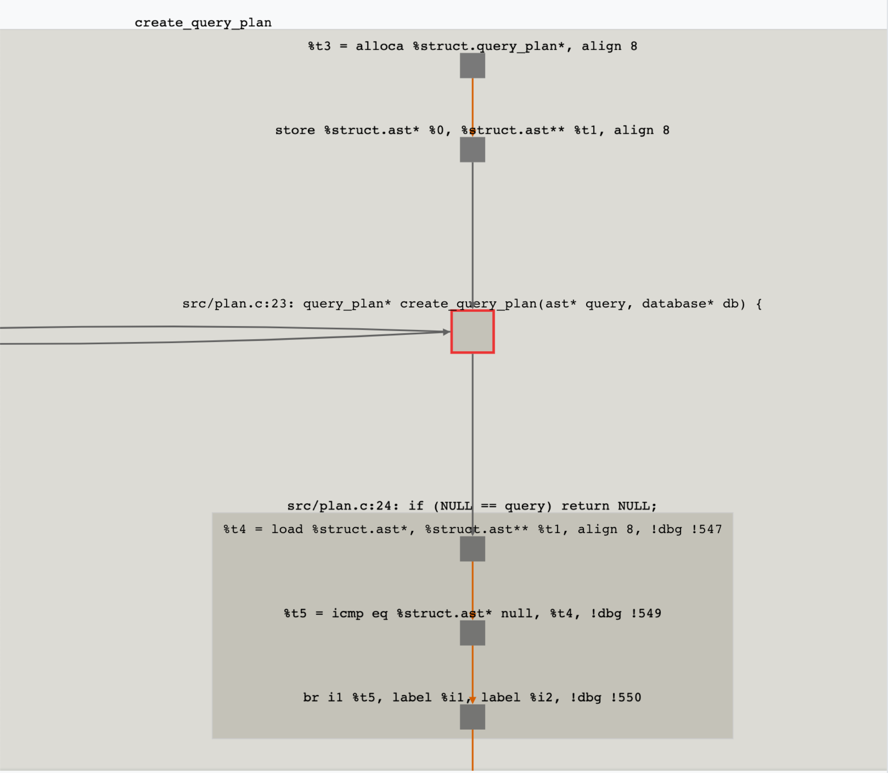
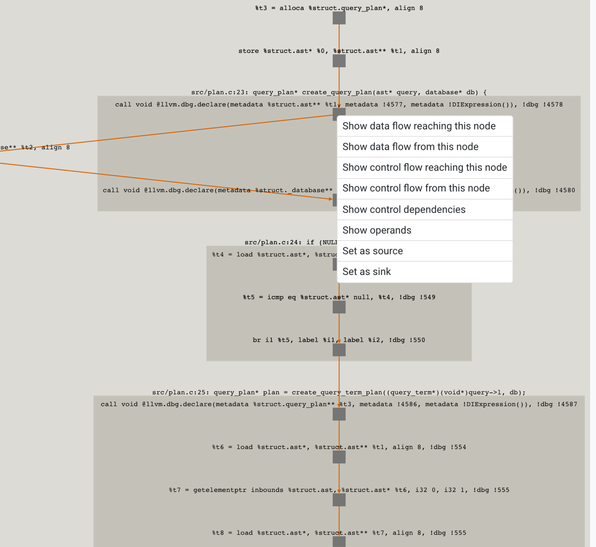
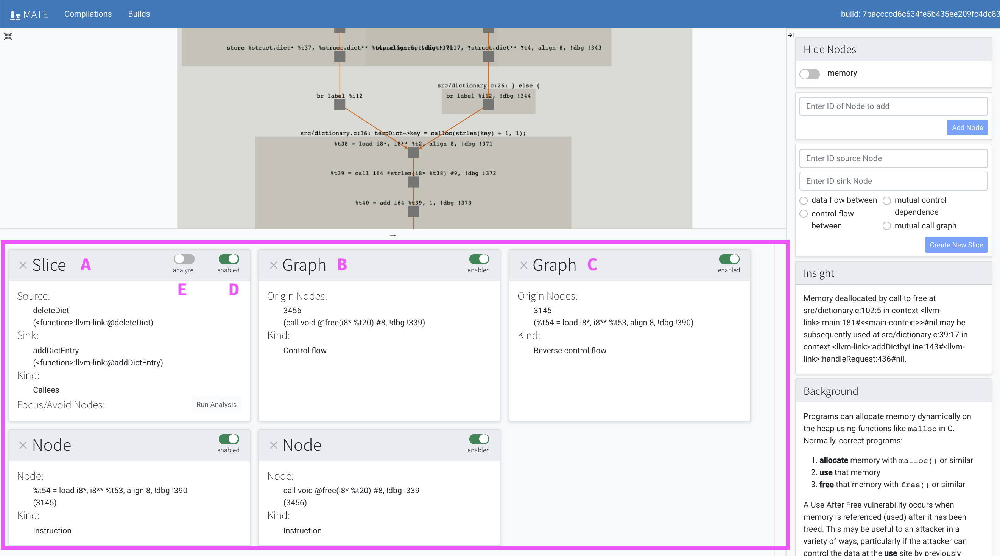
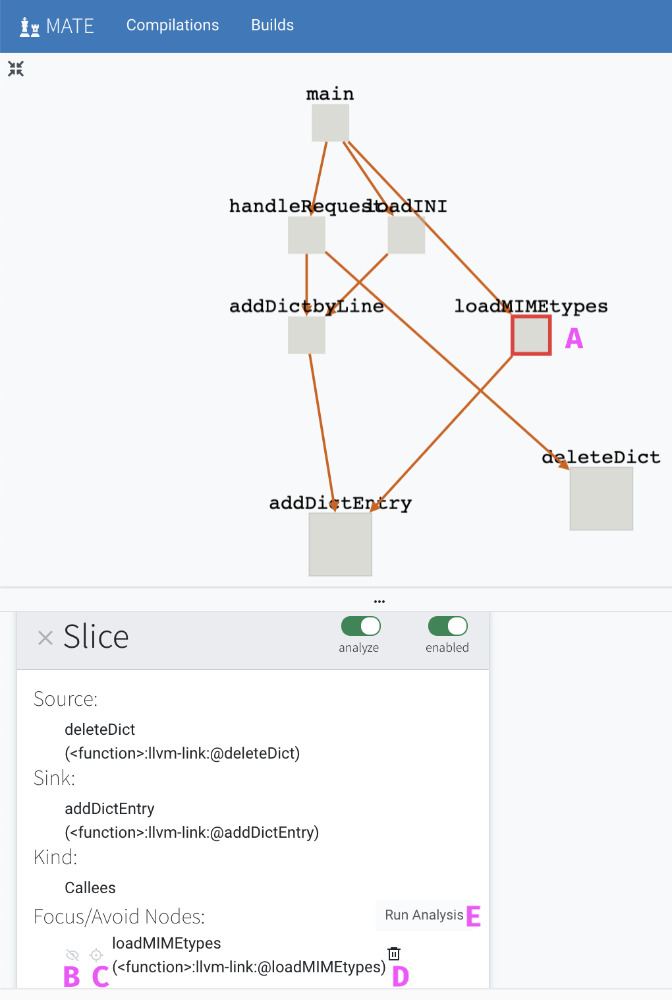

Using Flowfinder¶
Flowfinder is an interactive, graphical user interface for exploring a program’s code property graph. Given a potential vulnerability discovered via MATE’s automated analyses, Flowfinder displays relevant fragments of the CPG that explain relationships between program inputs, outputs, and computations. Users can deepen their understanding of the potential vulnerability by viewing additional fragments of the CPG that answer specific questions about program elements, such as data flows or control dependencies that influence specific statements. By exploring a potential vulnerability using Flowfinder, users can apply their high-level insights about the program’s semantics and security requirements to eliminate analysis false positives or develop concrete inputs that demonstrate the insecurity of the program.
Similar to other program analysis tools such as IDA Pro, Binary Ninja, and angr management, Flowfinder is designed to help answer questions such as “How does this data get from here to there and how is it changed along the way” or “If I can control this buffer, what effect can I have on the execution of the program?” By leveraging the detailed information in the MATE CPG, Flowfinder is intended to enable interprocedural analysis of program dataflows at a relatively high level of abstraction. Rather than navigating by scrolling or jumping between detailed level views of the program’s disassembly or source code, Flowfinder is designed to support expanding and contracting representations of code and data as needed and creating and manipulating visualizations of high-level flows between different components.
See Flowfinder Tutorial for a hands-on guide to finding a bug with Flowfinder.
Interface overview¶
When you click the analyze button on the Points of Interest page it will take you to the Flowfinder user interface.
Important
Loading Points of Interest can some times take a minute or two, especially the first time a POI for an analysis is loaded for a particular build. If the POI does not load after a few minutes, you may need to try reloading the page. If the page doesn’t load a second time, consider investigating a different POI—the code graph for this POI is likely to be too large to explore effectively.
This interface has three panels.

The panel in the top left is the graph area. The panel in the bottom left displays cards which represent what is shown in the graph. The panel on the right contains some controls for modifying the graph as well as some context for how to interpret the graph. Be sure to scroll down on the right-hand panel to see helpful background information about the kind of point of interest you are currently looking at.
We will look at all of the controls in each of these panels one at a time, starting with the main graph area.
Top left panel: graph area¶

You can pinch or pull on a touchpad to zoom in and out of the graph, and you can click and drag the canvas to change the view area. Additionally, you can use the arrow keys on your keyboard to move around the graph. In particular, sometimes the layout algorithm makes it challenging to see all the graphs you are interested in on a single screen–in these cases, it is helpful to drag nodes to where you want them.
- A:
Click on the symbol labeled A in the diagram to automatically recenter the graph.
- B:
Click on the symbol labeled B in the diagram to force the graph to be laid out again (this can be useful if you lose artifacts such as edges between nodes when adjusting the graph).
- C:
This is a legend to help provide insight into the meaning behind the colors of elements rendered in the graph.
- D:
The light grey box labeled D in the diagram, next to the text
create_query_plan, represents thecreate_query_planfunction in the program.- E:
The medium gray boxes represent lines of source code in that function. The top source code line node is labeled E in the diagram and the text beside it,
src/plan.c:23 query_plan(ast* query, database* db);, indicates that the linequery_plan(ast* query, database* db);appears on line 23 of the filesrc/plan.c.Note: these aren’t necessarily the only lines of source code in this function, only the ones relevant to this graph.
- F:
The dark gray boxes represent LLVM instructions; the LLVM instructions are grouped together based on the line of source code that they are derived from. You can tell that the LLVM node labeled is a
callinstruction based on the adjacent text.
You can click on the boxes to collapse or expand them as you explore the graph. If you click on the function level light grey box it will collapse the entire function to a single node. If you then click that single-function node again it will expand one level to show you the 4 medium gray boxes that represents the 4 lines of code in that function which are part of this graph.
Right-clicking on nodes in the graph will reveal a context menu that will allow you to query for more parts of the graph as you explore the program.
Right sidebar panel¶
The panel on the right provides some expert-user controls for manually adding more subgraphs, as well as helpful context about the current Point of Interest & the vulnerability it belongs to.

- A:
The small arrow symbol is a button which collapses the right hand panel if you do not need it.
- B:
If you would like to save your analysis for later work, or to share you can click on the “Save Snapshot” button. This will ask you to add a label to identify your snapshot. Once saved, you can find the saved snapshot in the “snapshots” page (linked from the header).
- C:
The memory node toggle controls whether memory nodes are shown or hidden. We recommend hiding memory nodes to simplify the visualization unless investigating specific data flows where the specific memory locations may reveal useful information.
- D:
This dialog box allows you to add nodes to the graph if you know their ID. You can find node ID’s using the MATE notebook.
- E:
This dialog box allows you to add new graph slices to the graph panel. Similarly, you must provide the IDs of the “source” and “sink” nodes, which you can populate either manually or from the node right-click context menu.
The features labeled F and G provide useful context about the current graph.
- F:
The insight panel describes what this point of interest in, and where in the code it is situated.
- G:
The background panel provides information about the general vulnerability class that this point of interest belongs to. The background panel also provides directions and specific suggestions of what to look for and what to try with this Flowfinder interface.
Create New Slice panel¶
The “Create New Slice” panel (labeled D) can be used to explore the
relationships between pairs on nodes in the code graph. To use the
interface, first specify the labels of a “source” and “sink” node for
the analysis, either by using the “Set as source” and “Set as sink”
context menu actions in the graph view, or by using the MATE Python
Notebook interface to query for the node of interest and noting it’s
uuid property. Four kinds of analyses can be run by selecting the
appropriate radio button and then clicking “Create New Slice”.
- Data flow between
The “data flow between” analysis will add a subgraph to the graph view showing all paths along which data may flow from the “source” node to the “sink” node. Note that like the dataflow context-menu actions, the analysis will only consider “thin” dataflows, and not the influence a pointer value may have on loads or stores.
- Control flow between
The “control flow between” analysis will add a subgraph to the graph view showing all intra-procedural control flows from the “source” node (which must be an instruction) and the “sink” node (which should be an instruction in the same function).
- Mutual control dependence
The “mutual control dependence” analysis will add a subgraph to the graph view showing all mutual control dependencies of the “source” and “sink” nodes. This analysis is useful for understanding the common conditions (or different conditions) under which two instructions in the same function will be executed.
- Mutual call graph
The “mutual call graph” analysis will add a subgraph to the graph view showing how the sink node is reachable from the source node. Both nodes must be function nodes. The graph will include sequences of functions that invoke each other that begin at the source (sink) and reach the sink (source) along with mutual callgraph ancestors of each function.
Bottom left panel: card area¶
{kind=link}
The cards in the lower left-hand panel represent the different subgraphs that together make up the graph that is displayed in the graph panel above. You may need to resize the window or scroll to see all the available graphs.
There are three types of possible cards/subgraphs, and different points of interest will use different combinations of cards. Some points of interest specify a graph consisting of only a single subgraph, while others, such as the one in the screenshot above, specify a graph consisting of many different kinds of subgraphs.
Each subgraph will represent one of four possible views of the code property graph: dataflow, control flow, control dependence or call graph. The three kinds of subgraphs are:
- Slice:
a
sliceis a subgraph that goes from a startingsourcenode to an endingsinknode. There are controls for refining what is shown in a slice which we will see later on in this document.- Graph:
a
graphis a subgraph that is specified using an origin node and includes edges of the given kind radiating from the origin.- Node:
a
nodeis a subgraph consisting of a single code-property-graph node.
Notice the labels A, B and C above distinguish which cards are which kind of subgraph.
There are one or two toggles on each card:
- D:
The
enabledtoggle is present on every type of graph card. Toggling it shows or hides the graph. It may be helpful to either click the recenter button or manually drag nodes to recenter the graph after hiding / revealing components.- E:
The
analyzetoggle is only present onslicecards. As you explore the graph you may find nodes which you either want to focus the slice on or remove from a slice; this toggle allows you to do that.
When you click the analyze toggle, it will select that slice,
highlighting it in gold. You can then click on nodes to include or
exclude them in the slice.
Slice analysis mode¶
{kind=link}
In the screenshot above, we’ve put the slice into analyze mode and
then clicked on the loadIMEtypes node (labeled A).
This populates loadIMEtypes as a node in the Focus/Avoid Nodes
portion of the card. You can add multiple nodes by clicking on them.
For each selected node, you can then click on the avoid button
(labeled B) which looks like a crossed out eye, or the focus
button (labeled C) which looks like a cross-hair. You can also remove
the node from the Focus/Avoid Nodes portion of the card by
clicking the trash can (labeled D). Choosing avoid will rerun the
slice query (from source to sink), but avoiding all paths that
include the specified node. Choosing focus will rerun the slice
query, but include only those paths that include the specified node.
Important
Currently, the focus and avoid feature is only functional for data flow slices.
Finally, click the Run Analysis button (labeled E) to create a new
slice that focuses on and/or avoids the nodes you’ve selected. The
current slice will be automatically disabled, and the new slice will
be enabled instead.